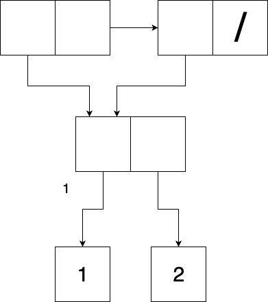
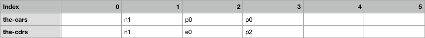

5.20 Exercise 5.20
We are asked to draw box-and-pointer and memory representations of the following list:
(define x (cons 1 2)) (define y (list x x))
Additionally, we are told that the free pointer is initially at p1.
If we perform these allocations in order, then we will first put a cons cell with the number 1 in both the car and cdr slots in slot p1. I believe this is uncontroversial – we may not have a list, but car and cdr of any kind of pair are straightforward.
Next, we should add a cons cell with the car pointing at p0 and the cdr slot pointing to the empty list e0. I believe that the most reasonable way to fill out memory when constructing lists with the list operator is to construct them in reverse order, with the last cons cell being allocated first. This is easier to implement because it allows the earlier cells to refer to cells that have already been created. This will also let us take advantage of the normal incrementing of the free pointer.
It follows that we place the next (and first) cons cell of y in slot p3. This points to p0 in the car position and p2 in the cdr position.
After we’re done, the free pointer is at position p4.
Diagrams follow:

